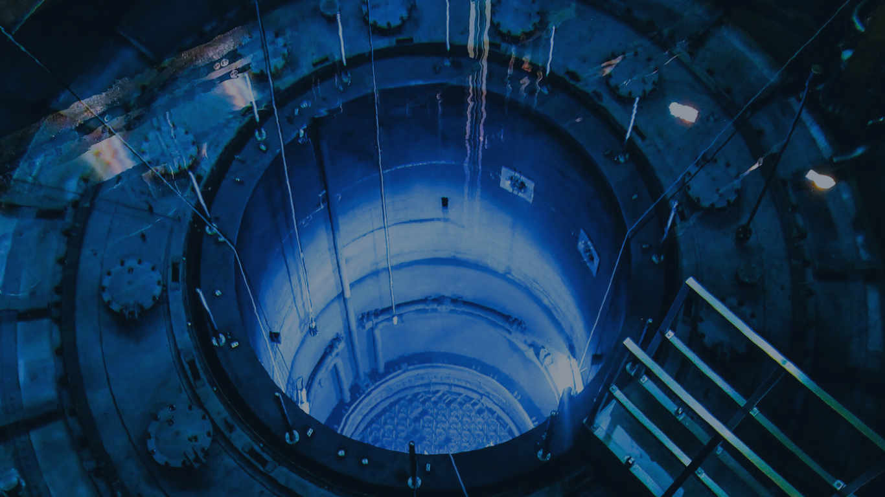

<?php
    require_once "header.html";
?>

<!DOCTYPE html>
<!--[if lt IE 7]>      <html class="no-js lt-ie9 lt-ie8 lt-ie7"> <![endif]-->
<!--[if IE 7]>         <html class="no-js lt-ie9 lt-ie8"> <![endif]-->
<!--[if IE 8]>         <html class="no-js lt-ie9"> <![endif]-->
<!--[if gt IE 8]>      <html class="no-js"> <!--<![endif]-->
<html>
    <body>
        <!--[if lt IE 7]>
            <p class="browsehappy">You are using an <strong>outdated</strong> browser. Please <a href="#">upgrade your browser</a> to improve your experience.</p>
        <![endif]-->
        <header><!--add BODY THEN ADD NAV-->
        <div class="headlogo">
            <a href="#">SCIENCE </a>
            <p> TIMES</p>
        <div class="logo">
                </img>
         </div>
        </div>
        <div class="topnav" id="myTopnav">
            <a href="index.php">Home</a>
            <a href="biology.php">Biology</a>
            <a href="physics.php">Physics</a>
            <a href="chemistry.php">Chemistry</a>
            <a href="math.php">Math</a>
            <a href="fun.php">Fun</a>
            <a href="about.php">About</a>
            <a href="#"><button id="donate">Donate</button></a>
            <!---<a href="javascript:void(0);" class="icon" onclick="openNav()">
              <i class="fa fa-bars"></i>
            </a>-->
          </div>
</header>
        <main>
        <div class="cover">
            <!--ADD BACKGROUND IMAGE-->
            </img>
            <div class="centered">
                    <h3>Nuclear Energy</h3>
            </div>
        </div>
        </main>
        <script src="" async defer></script>
    </body>
</html>

<?php    
    require_once "footer.html";
?>